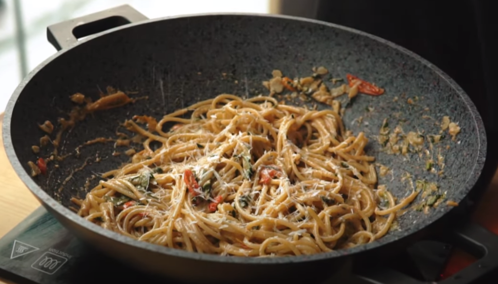

This pasta is the combination of 2 Italian traditional preparations the pesto an tomato pasta, which by themselves are already delicious but when combined reach a whole new flavor level
- 3 garlic gloves
- Salt
- 50 g pine nuts
- If you can't get pine nuts(which is common) use wall nuts instead
- Basil
- 50 g pecorino romano cheese
- Olive oil
- 200 g pasta of your choice
- 1 red chili
- 150 g cherry tomatoes
- In a mortar add 2 roasted garlic gloves, a pitch of salt and star breaking that down into a paste
- Now add pine nuts or walnuts, some fresh chopped basil and keep smashing
- Now shred some pecorino romano and add it to the mortar
- Smash until it form a paste, once it's done thin it with some olive oil and mix
- Bring water to boil, add some salt and your pasta and boil for 11 minutes
- In a wok or large pan add some olive oil, sliced garlic, sliced red chili slices and some cherry tomatoes and a pitch of salt
- Once this mixture is coked add the pasta, pesto paste and some hot pasta water and mix it
- When everything is well incorporate and some fresh basil mix and top with some extra pecorino romano
- And now it's time to enjoy